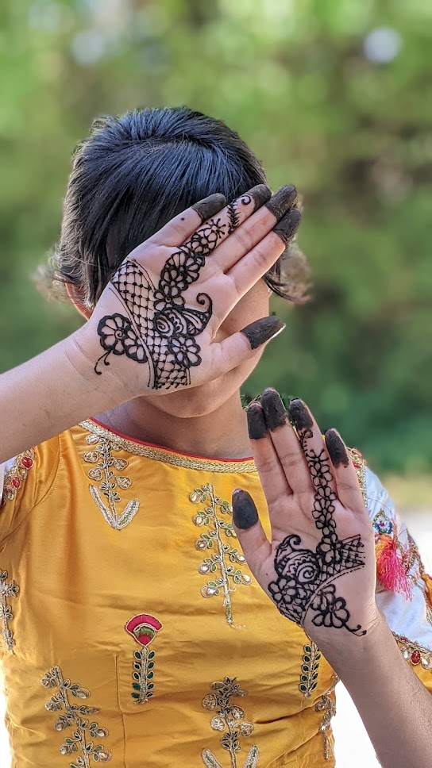

Hello! My name is Nia, and I am currently a senior in high school. I am an adamant and incurable foodie, and you will find me either reading a book, eating udon noodles, or working out in an attempt to make peace with the consequences of being a foodie, Aside from eating, playing badminton, watching movies, and playing boardgames, art is one of my oldest and dearest hobbies.
My art story
I have been painting, drawing, and creating ever since I discovered how to hold a paintbrush. I specialize in fine color pencil art, and treasure the life of all the prismacolors I have owned- from fresh, unused pencils to the stubs they eventually become. I am a relatively amateur oil painter, having completed my first oil painting in the year 2021. However, I am old friends with the smudgy warmth of oil pastels- particularly when it comes to still-life pieces. My most treasured skill was introduced to me later than other techniques.
On a visit to India in the year 2017, I learned the art of Henna.
At that age, although I attended classes over that trip, I still could not quite get the hang of it- learning to hold a henna cone proved especially tricky for my small, unaccustomed hands. More recently, I attempted Henna once again in the summer of 2021. This time, it clicked. The designs came to me naturally and before I knew it, my friends were requesting temporary tattoos of their own. This inspired me to start my first business, “Henna by Nia”, and the creation of this website as a means of communicating my passions. You can view my art under the “Portfolio” tab of this website and contact me at the following email for art commissions and henna appointments: henna.by.nia31@gmail.com. You can also view more of my henna posts on insta: @henna.by.nia. Nice to meet you!
 Hello! My name is Nia, and I am currently a senior in high school. I am an adamant and incurable foodie, and you will find me either reading a book, eating udon noodles, or working out in an attempt to make peace with the consequences of being a foodie, Aside from eating, playing badminton, watching movies, and playing boardgames, art is one of my oldest and dearest hobbies.
Hello! My name is Nia, and I am currently a senior in high school. I am an adamant and incurable foodie, and you will find me either reading a book, eating udon noodles, or working out in an attempt to make peace with the consequences of being a foodie, Aside from eating, playing badminton, watching movies, and playing boardgames, art is one of my oldest and dearest hobbies. I have been painting, drawing, and creating ever since I discovered how to hold a paintbrush. I specialize in fine color pencil art, and treasure the life of all the prismacolors I have owned- from fresh, unused pencils to the stubs they eventually become. I am a relatively amateur oil painter, having completed my first oil painting in the year 2021. However, I am old friends with the smudgy warmth of oil pastels- particularly when it comes to still-life pieces. My most treasured skill was introduced to me later than other techniques.
I have been painting, drawing, and creating ever since I discovered how to hold a paintbrush. I specialize in fine color pencil art, and treasure the life of all the prismacolors I have owned- from fresh, unused pencils to the stubs they eventually become. I am a relatively amateur oil painter, having completed my first oil painting in the year 2021. However, I am old friends with the smudgy warmth of oil pastels- particularly when it comes to still-life pieces. My most treasured skill was introduced to me later than other techniques.